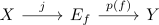
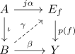

relative cw complex and injection surjection criteria for any map
Proposition
Let $\iota: A \hookrightarrow B$ be a CW Pair, $f: X \rightarrow Y$ any map and $D \subseteq \mathbb{N}$ such that all cells in $B$ have dimension $d \in D$. Suppose that
- $f_*: \pi_{d-1}(X,x) \rightarrow \pi_{d-1}(Y,f(xr)$ is injective for $d \in D$ and $x \in X$.
- $f_*: \pi_d(X,x) \rightarrow \pi_d(Y,f(x))$ is surjective for $d \in D$, $x \in X$
Then for every commutative square
there exists a map
Proof
Factor

such that
- $j$ is a deformation retract
- $p(f)$ is a serre fibration
By <> there exists a lift

Define
\begin{align*}
\overline{\beta} = j^{-1} \gamma
\end{align*}
where
\begin{align*}
j^{-1}: E_f \rightarrow X
\end{align*}
is a homotopy inverse retraction to $j$
Then
\begin{align*}
\overline{\beta} \iota =& \iota^{-1} \gamma \iota \\
=& \iota^{-1} \iota \alpha \\
=& \alpha
\end{align*}
and therefore
\begin{align*}
f \overline{\beta} = f j^{-1} \gamma = p(f) j j^{-1} \gamma \simeq_{A} p(f) \gamma = \beta
\end{align*}